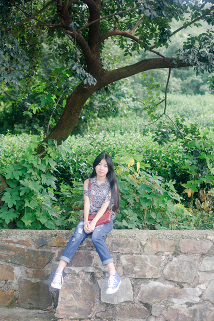
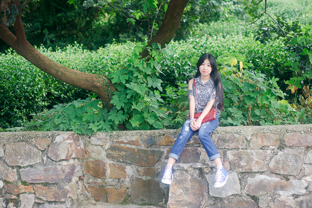
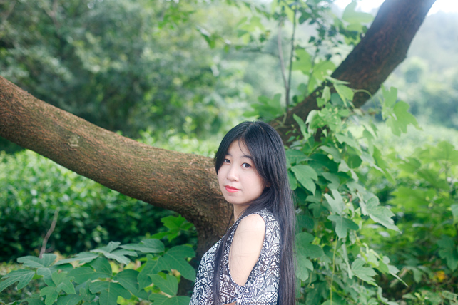
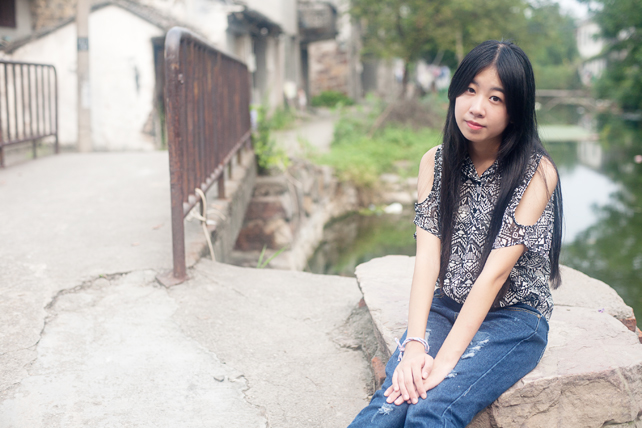
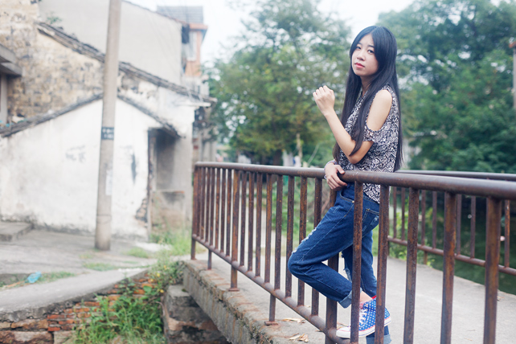
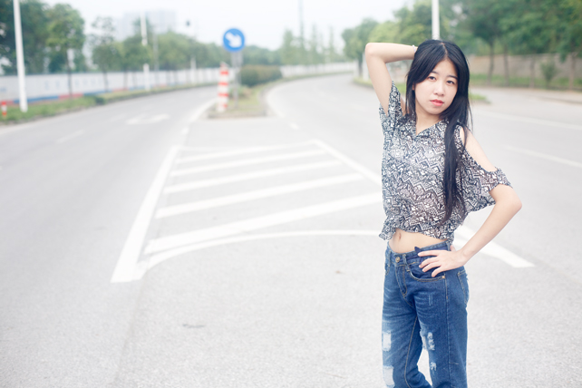
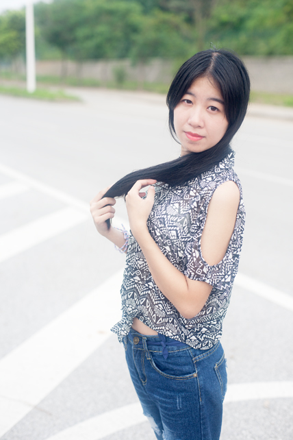

9月4日正是假期里，那天太阳透过厚厚的云层，光线显得有气无力，俗称淡水太阳。
可这样的光线也挺适合拍摄人像。拍摄前几天就查询过天气预报，本以为会是完全的阴天，再凉爽一点就完美了，但那天的太阳还是倔强得透出了头。
拍摄地点在一处幽静的山路，再过三四天就是白露了，而太阳的热度却依然强大，把山路两旁的各类植物晒得滚烫，热气蒸腾，向四周弥漫开来。我们完全沐浴在热浪中，无处可逃。有人戏称就像蒸桑拿。
但相机和照片却并不会感知温度，所有我们感觉到的悲伤或快乐，炎热或寒冷等抽象事物都会被相机过滤掉，最终留存在照片中的只有实际的构成和光线轮廓。
即便如此，摄影者仍希望通过人物的眼神，动作或表情去表达内在的情绪，去展现一些抽象。
所以就算拍摄时像蒸桑拿般炎热，但最终照片中是决看不出来的。而对摄影者来说，拍照时如何摒弃这些抽象因素，把注意力放在实际的构成，色彩和光线上，努力通过这些外形去表达内在的情绪，才是值得去思考的。
感谢模特在如此热浪中仍然优雅地完成拍摄。虽然劳累和辛苦总是不可避免，但对拍摄结果的希冀与期盼，让人又觉得，只要能拍到满意的照片，就是值得的。
图片






